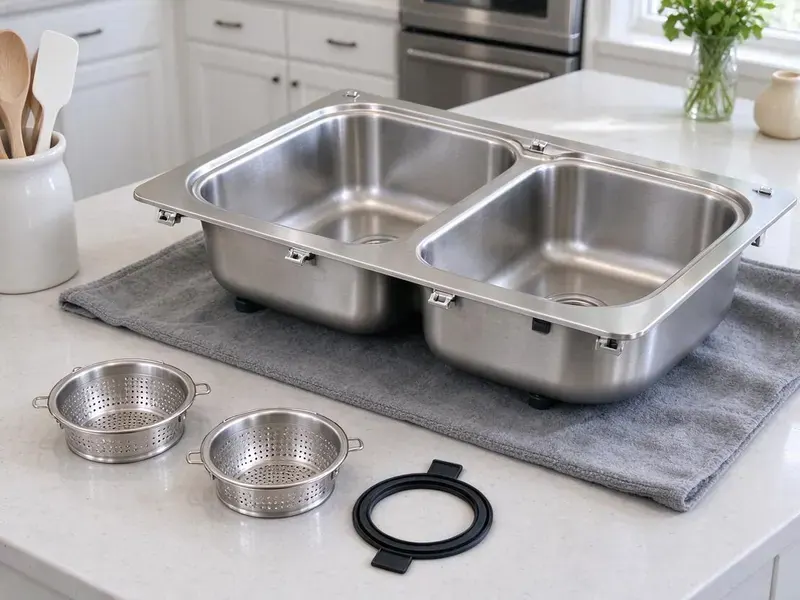

Grease Trap Installation in Wheaton, MD
BVL Plumbing sets hydromechanical traps and gravity interceptors in Wheaton, MD, built to pass.
- Traffic-Rated Lids
- Free Estimates
- Permit Paperwork Handled
- Licensed and Insured

Failed a FOG Inspection in Wheaton, MD?
Call BVL Plumbing at (443) 719-1650 and a tech will walk your kitchen this week.
Commercial Grease Trap Installers in Wheaton, MD
BVL Plumbing installs grease traps and interceptors for restaurants and commercial kitchens in Wheaton, MD, from 10 GPM under-sink units to buried tanks over 1,000 gallons. Most of the trouble we fix began with a bad sizing call. We calculate flow from your actual fixtures and check the number against what the local sewer authority requires before anything is ordered.
Our expertise includes:
- Automatic grease removal units
- Sampling ports where the sewer authority asks
- Traffic-rated lids for drive lanes

Additional Kitchen Plumbing Services in Wheaton, MD
Our kitchen plumbing services in Wheaton, MD cover sinks, disposals, dishwashers, and grease traps so your kitchen stays clean, safe, and fully functional.


Customers
Why Choose BVL Plumbing for Grease Trap Installation in Wheaton, MD?
Code requires a flow control fitting on most hydromechanical traps, and we still find kitchens running without one. Without it, a dumped sink overwhelms the unit. We install the fitting, vent the air intake to code and test the trap with a full sink drain before we leave, so you know it handles your worst case.
- Sized From Your Fixtures, We calculate flow from every sink, floor sink and dish machine that ties in.
- Certified Units, We install traps certified to PDI G-101 or the matching ASME standard.
- Permit Handled, The permit and sizing calculation go in under our license and book the inspections.
Citywide Coverage
From a single coffee bar to a commissary serving a dozen food trucks, we cover grease trap installs throughout the Wheaton area. Only the size changes. Every job gets the same sizing math and the same inspection checklist.
Experienced Team
Every tech on our grease trap crew carries a laser level and a sewer camera, because a trap set out of level or tied into a broken line will fail early. Both get checked before the lid goes on. Mistakes get caught on site. Our lead reviews the sizing math on every job before a unit is ordered, which catches the most common mistake in this trade.
Safety-First Approach
Open trenches and lifted lids get barricaded before we walk away, even for a lunch break. People walking to a car or a back door are not looking down. Trenches in a drive lane get steel plates, and lids go back on every night. Nothing stays open overnight.
Trusted Certified Wheaton Plumbing Services Professionals
At BVL Plumbing, we take pride in licensed, certified plumbing services throughout Wheaton, MD. Those papers on the wall mean something. Every repair, install and maintenance visit follows strict safety and quality rules, and the plumbers doing the work carry recognized industry credentials.
Call Us Now PHCC Plumbing Contractor Recognition
PHCC Plumbing Contractor Recognition Better Business Bureau (BBB) Accreditation
Better Business Bureau (BBB) Accreditation Angi Certified Pro
Angi Certified Pro ISO 9001 Quality Management Certification
ISO 9001 Quality Management CertificationGrease Traps and Interceptors Set in Wheaton, MD
Food Truck Commissary and Ghost Kitchen Traps in Wheaton, MD
Commissary kitchens see a dozen trucks dumping wash water in the same two hours, which is a different load from a restaurant spreading it over a long shift. We size for that spike. Shared delivery-only kitchens can have more sinks per square foot than any dining room, and the trap must handle all of them. Each brand's prep sink counts.

Grease Trap Brands We Install in Wheaton
Zurn, Watts, Schier and Endura cover most of what we set in commercial kitchens, plus precast concrete tanks for the big outdoor interceptors. The lid gaskets and baffles differ from brand to brand. Parts availability matters. We lean toward units with parts a local supply house keeps on the shelf, so a cracked lid does not close you for a week.
Replacement and Upgrade Services in Wheaton, MD
Steel traps from decades back rust through at the baffle seams, and by then the outlet is usually passing grease straight to the sewer. We run a camera down the outlet first to see how much grease got past the old unit. Sometimes the line needs jetting too. Upgrading also gives you a chance to move from a 20 GPM trap to a 35 or 50 if the menu or seat count grew.
Hydro-Mechanical Grease Trap Installation in Wheaton, MD
Hydromechanical traps use baffles and a vented flow control to pull grease out of water moving at a set rate, usually 20 to 100 gallons per minute. They fit indoors, under a sink or in a floor pit. The flow control is not optional. Without it, a dumped sink pushes water through faster than the unit is rated for and the grease goes out the outlet. We look for units certified to PDI G-101 or ASME A112.14.3.
New Restaurant Build-Out Grease Traps in Wheaton
On a new build-out, the grease trap gets decided before the slab is poured, not after. The drawings and the equipment list from your kitchen designer tell us what will drain where. Changes get expensive. Saw-cutting a finished floor to relocate a trap can add several days to a build-out, so we flag sizing or location problems at plan review.
Emergency Grease Trap Services in Wheaton, MD
A grease trap backing up into the floor sinks at the start of Friday dinner service means a closed kitchen and a health inspector who may not let you reopen until it is fixed. First job is figuring out whether the clog is in the trap or the pipe on either side of it. Often it is the outlet. A failed trap can often get a stopgap unit that night and a proper replacement later in the week.
Commercial Kitchen Grease Trap Installs in Wheaton
Every commercial install starts with a fixture list. We count each sink, floor drain and dish machine that will tie in, then add the gallons per minute each one can dump. From there we pick a hydromechanical unit or a gravity tank and figure out where it can sit with a straight shot to the building sewer. Fewer bends, fewer clogs.

Under-Sink Grease Trap Setup in Wheaton, MD
Small cafes and coffee bars often get by with a 10 to 25 GPM hydromechanical trap tucked under the prep sink or beside it. The unit goes on the floor or in a shallow recess, and the flow control fitting goes upstream. Clearance matters most. Your staff needs to lift the lid and clean it weekly, so we leave space to do that without unbolting anything.
Grease Trap Installation Near Me in Wheaton, MD
Having a plumber near Wheaton who already knows your trap makes the next call faster. Our dispatch line is (443) 719-1650. We keep a record of every unit we install, with the model and the install date. Next time you need service, we already know what you have.
Nearby service matters after the install too. Lids crack and gaskets wear, and a crew based near you can be back on site the same day with the part. We stock the common gaskets and lids for the brands we install.
BVL Plumbing at a Glance
- Fully licensed plumbing team covering Wheaton, MD
- Same-day appointments and 24/7 emergency response
- Clear written estimates, no hidden fees
- 4.8-star rated by 542+ Maryland customers
Wheaton Map
Wheaton Information
- Population
- 52,150
- Area codes
- 301/240/410
- Service area
- Wheaton and communities within 40 miles
- Nearby
- Aspen Hill, North Bethesda, Silver Spring, Bethesda
A grease trap in a Wheaton, MD kitchen has to match the peak flow of the sinks that drain to it, or grease goes straight to the sewer. Summer humidity keeps crawlspaces and basements damp, which speeds up corrosion on older metal pipes and fittings.
Talk to a Plumber
Reach out to BVL Plumbing for reliable plumbing work done by licensed pros in Wheaton, MD.
Our Specialized Plumbing Services in Wheaton, MD
At BVL Plumbing, you get every kind of plumbing service from one company across Wheaton, MD. We go from leak detection all the way to full system installations, for homes and commercial buildings, and we do it quickly at a fair price. Here are the core services we offer:


How a Grease Trap Install Works in Wheaton, MD
A grease trap job is mostly planning. The install itself is often a single day in Wheaton.
Call and Fixture List
Call BVL Plumbing at (443) 719-1650 and tell us what drains to the trap. We set a site visit and give you a written estimate after it.
Size and Permit
Our tech runs the flow math on each fixture, pick the unit and file the permit in Wheaton with the sizing attached.
Install and Test
We set the trap, pipe the flow control and vent, and drain a full sink through it before the inspector signs off.
Frequently Asked Questions About Grease Trap Installation in Wheaton
Small under-sink hydromechanical traps usually land between $1,000 and $3,000 installed, and buried interceptors with excavation commonly run $5,000 to $20,000 or more. The spread comes from access and how much concrete or paving we cut. Permits add a little. You get a written, itemized number after we see the kitchen.
For indoor traps we lean on Zurn, Watts, Schier and Endura, because their parts are easy to find and their units carry PDI or ASME certification. We like the plastic bodies from Schier where steel would rust out. Brand matters less than sizing. A well-known trap installed too small will still fail inspection, so we pick the size first and the brand second.
It keeps cooking grease out of the public sewer. Hot greasy water cools as it moves through the trap, the grease floats to the top, and cleaner water leaves through the outlet. Grease that reaches the mains hardens into blockages, and the sewer authority bills the kitchens it traces back to. Your own drain lines benefit too.
Pump-outs every couple of weeks on a trap that used to go two months is the clearest sign you have outgrown it or the baffles have failed. So is a sour grease smell near the floor sinks. Rust shows up too. On steel traps we look for pinholes at the seams, and on any trap we check whether the outlet line downstream is coated with grease that should have been caught.
Coverage comes from two places. The manufacturer warrants the trap body and lid, and the term depends on the brand and whether it is steel or plastic. Our written labor warranty covers the joints we made and how we set the unit. Damage from skipped cleanings falls outside it.
Almost always, yes. Commercial grease traps fall under the plumbing permit, and many sewer authorities also want their own FOG approval on the size and model. We pull the permit, submit the sizing calculation and schedule the rough and final inspections. Expect an inspector on site.
Plastic hydromechanical traps often last 20 years or more, while coated steel traps can rust out in 7 to 15 depending on how harsh the wastewater runs. Concrete tanks can last decades, though hydrogen sulfide gas slowly eats the concrete above the water line. Cleaning habits matter most. Rough cleaning and long gaps between pump-outs shorten the life of every type.
Size comes from flow, and flow comes from your fixtures. We add up the drain rate of each sink compartment, floor sink and dish machine, then apply the code's drain-down time to get gallons per minute. Gravity tanks use volume instead. For those, the local pretreatment program often has its own formula based on seats or fixture units, and we use theirs.
Hear From Customers Who Hired Our Plumbing Experts

Carlos V.
Our house still had galvanized pipe, and upstairs the shower was a trickle. The crew repiped everything in PEX over three days and patched every drywall hole before they left. The pressure difference is night and day.
Repiping · Bethesda, MD
Emily R.
The shutoff valve under our kitchen sink snapped off in my hand on a Sunday morning. BVL Plumbing had someone out by early afternoon. He replaced both angle stops with quarter turn valves and showed me where our main shutoff was, which I honestly did not know.
Plumbing Repair · Bethesda, MD
Diane F.
My kitchen faucet had dripped for months and I finally got tired of hearing it at night. BVL Plumbing came out the next morning, replaced the cartridge and the O rings, and tightened a loose base that was letting water under the sink.
Faucet Repair · North Bethesda, MD
Greg S.
I manage a small strip center with six tenants. BVL Plumbing handles our annual backflow testing and fixed a recurring clog in the shared sewer line that had been backing into the nail salon. Their reports come in clean and on time.
Commercial Plumbing · Rockville, MDRachel N.
Hard water was leaving white crust on every faucet and our dishwasher was struggling. The tech tested the water, recommended a softener sized for a family of five, and installed it with a bypass valve in one afternoon. The spots on our glasses are gone.
Water Softener · Potomac, MDPaul B.
Our pit pump ran nonstop even in dry weather. The plumber found the check valve was stuck open, so the same water kept cycling back into the pit. New valve, new float switch, done in an hour. It runs quiet now.
Sump Pump · Silver Spring, MD